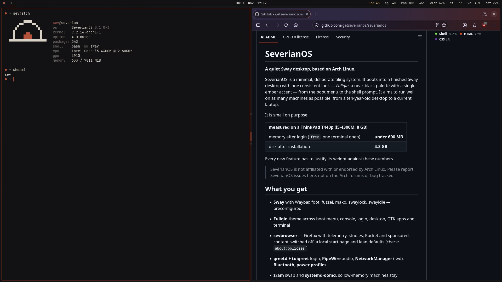
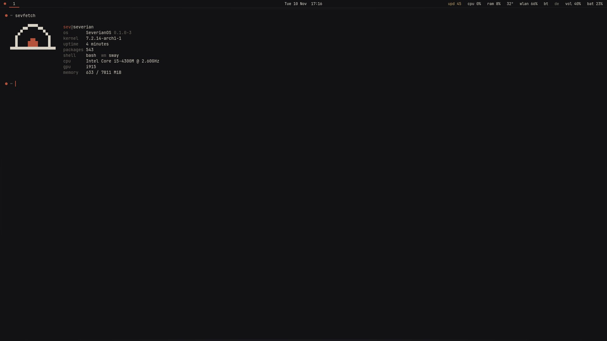

A quiet Sway desktop, based on Arch Linux.
SeverianOS boots into a finished tiling desktop with one consistent look, from the boot menu to the shell prompt. It stays light enough for a ten-year-old laptop and needs no evening of setup.
x86-64 · AMD and Intel graphics · signed ISO and packages · free software (GPL-3.0)

small on purpose
what you get
Sway, finished
Waybar, foot, fuzzel, mako, swaylock and swayidle, configured to work together on first boot. Super+F1 shows every shortcut.
Fuligin everywhere
A near-black palette with one ember accent across boot menu, console, login, desktop, GTK apps and terminal.
A browser without the noise
sevbrowser is Firefox with telemetry, studies, Pocket and sponsored content switched off and a local start page.
Light on memory
zram swap and systemd-oomd keep machines with little RAM responsive. Every feature is measured before it ships.
Signed updates
SeverianOS packages come from a signed repository on top of Arch Linux. The bar shows pending updates; one click installs them.
Your configs stay yours
sevconfig compares your files with the defaults and restores them on request, with a backup of your version.
small tools of its own
| sevinstall | the installer: ext4 or btrfs, optional full-disk encryption, UEFI or BIOS |
| sevupdate | update the system |
| sevconfig | compare your configs with the defaults, restore them |
| sevhelp | all shortcuts super + f1 |
| sevkeyboard | pick a keyboard layout super + f2 |
| sevpower | lock, log out, reboot, power off super + shift + e |
| sevshot | screenshots to ~/Pictures/Screenshots super + print |
| sevbattery | warns at 10 % and 5 % battery |
| sevfetch | system info |
coming in 0.2
In testing now, not in the current ISO yet:
- sev, the ember: system status in the bar and terminal, plus
sev doctor,sev cleanandsev fix - One settings menu for network, sound, displays, keyboard, touchpad and more
- Display profiles, clipboard history, night light, screen recording
- A package manager menu to search, install and remove software
hardware
- Any x86-64 CPU, baseline v1
- AMD and Intel graphics via Mesa
- UEFI (Secure Boot off) or legacy BIOS
- 4 GB RAM recommended, 20 GB disk recommended (12 GB minimum)
- Nvidia is not supported
Tested on a ThinkPad T440p (Intel HD 4600) and an AMD A10-6700 desktop (Radeon HD 8670D). Older AMD cards such as the HD 8670D run without Vulkan; that is a limit of the hardware.
install
- Download the ISO and its checksum from the latest release.
- Check the download, then write it to a USB stick.
- Boot from the stick. The live system is a full SeverianOS desktop.
- Press Super+D and choose Install SeverianOS.
# check the download sha256sum -c severianos-*-x86_64.iso.sha256 # write it to a stick (replace sdX!) sudo dd if=severianos-*-x86_64.iso of=/dev/sdX \ bs=4M status=progress oflag=sync
Signature check with gpg: see the release notes. Getting started
the first terminal
